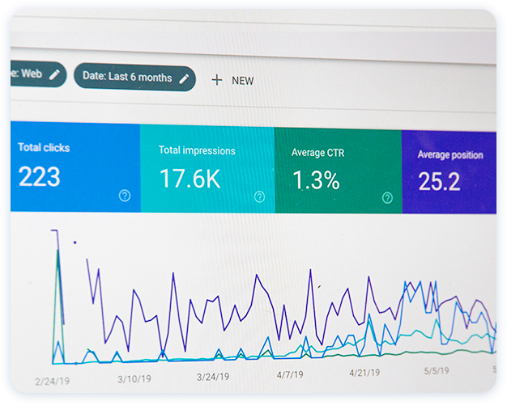

WHAT?
백링크는 전세계적으로 사용하는 SEO 최적화 마케팅입니다.
구글에서 상위노출에 영향을 미치는 요소는 백링크를 포함하여 TF, PA, DA 등
10가지가 넘는 측정항목(metrics)이 있습니다. 그 중 백링크는 키워드를
기반으로 하여 타 사이트나 웹페이지에 유입 링크를 개제하는 것으로써
직접적은 광고가 아닌, 같은 키워드로 검색했을 때 득표를 취득하기 위한
링크로써 많은 득표를 얻는 웹사이트가 더 상위에 노출되는 역할을 합니다.
*SEO: 검색엔진최적화 (Search Engine Optimization)
WHY?
콜링크는 구글 검색원리의 순기능만을 활용하며,
인위적인 트래픽이나 어뷰징과 같은 우회적인
방법을 절대 사용하지 않습니다.
콜링크에서 제공하는 백링크는 그 어떤 타사보다
안전하며 오로지 좋은 영향을 미치는 백링크만을
제공합니다. 성과가 빠르게 나타난다면 백링크의
품질이 좋다는 것을 증명하는 것입니다.
WHO?
노력이 아닌 '전략'이 필요합니다.
포털 사이트에서 검색 시 첫 페이지를 가져오는
가장 현명한 선택! 백링크에 문의하세요.